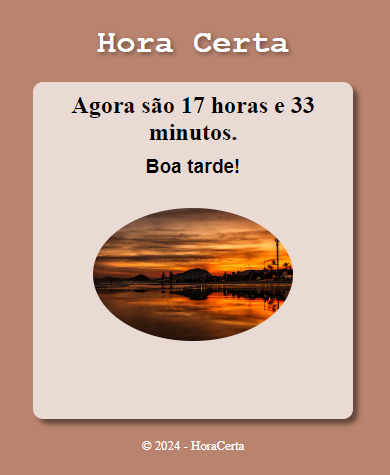

Quem sou eu?
Meu nome é Fátima Hammoud, sou nutricionista de formação desde 2021 e hoje estou em transição de carreira para a área de tecnologia. Estou me especializando, no momento, em desenvolvimento de sites/aplicações. Estou em busca de uma oportunidade para desenvolvimento e aprendizagem, junto a uma empresa que acredite na importancia da evolução profissional e pessoal através do ensino e colaboração mutua.
Meu Portfólio
Site feito para divulgar trabalhos de uma artesã,
foi utilizado no projeto HTML, CSS e JavaScript. Ver mais
Site ficticio de curiosidades sobre o androide, utilizado HTML e CSS. Ver mais
Site calculadora feita com HTML, CSS e JavaScript.Ver mais
Site Hora Certa feita com HTML, CSS e JavaScript.Ver mais
Tela de login responsiva feita com HTML e CSS.Ver mais
Site do Cordel de Milton Duarte com HTML e CSS.Ver mais
Como falar comigo?